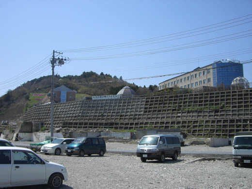
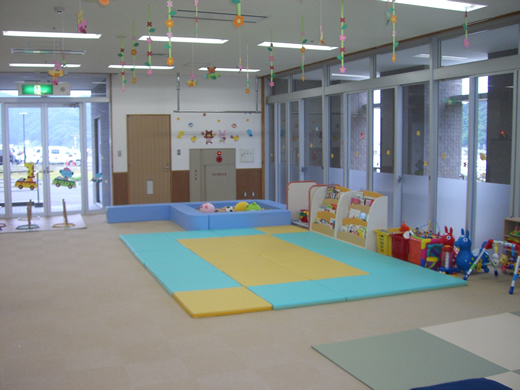
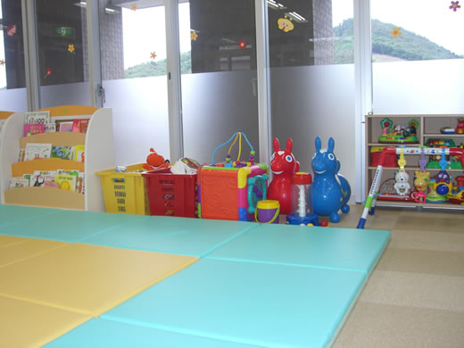
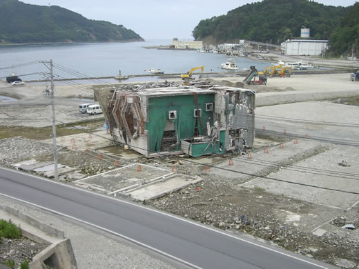

お知らせ
2015-06-17 宮城県保育関係団体連絡会総会のお知らせ
第36回 宮城保育団体合同研究集会
・日時：2015年6月28日(日)
・場所：東北文化学園大学
・詳細： 今すぐPDFファイルをダウンロードする
今すぐPDFファイルをダウンロードする
・申込方法：ホームページお申込みフォーム または 郵便振込
記念講演の講師に 福島大学教授 全国保育団体連絡会会長 大宮勇雄氏 をお迎えして、
「保育の質と子ども・子育て支援新制度」をテーマにお話しをして頂きます。
各年齢毎の分科会では様々な保育園からの実践報告、
保護者の為の保育制度学習と保護者会活動の報告交流の分科会もあります。
実技講座は定員がございますのでお申し込みはお早めに！
どれも明日の保育に生かせる内容ばかりです。
現役の保育士さんだけでなく保育士を目指す学生さんや子育て中のお父さんお母さん等
どなたでも参加できる集会ですので是非お申し込みの上ご参加下さい。
2013-10-26 保育センター主催 保育制度学習会のご案内
新制度が２０１５年度から開始されることは決定しているけど不透明な部分が多くて心配。
子ども、保護者、保育者、これから保育園を利用する人にとって良い制度なの？
待機児童は解消されてバラ色の保育園生活が待ってるの？
等々・・・
そんな不安いっぱいの新制度の中身を学習しませんか？
保育制度を知りたい方なら誰でも参加できますので是非ご参加下さい。
「新制度でどうなる私たちの保育は？」
講師 逆井 直紀氏（全国保育団体連絡会）
○ 日時：１１月９日（土）１８：3０～２０：００
○ 会場：仙台市中央市民センター(パルシティ)
○ 資料代：５００円
○ 主催：宮城県保育関係団体連絡会
 PDFファイルをダウンロード
PDFファイルをダウンロード
【 お問い合わせ 】
・宮城県保育関係団体連絡会
・〒980-0021 宮城県仙台市青葉区中央4-3-28 朝市ビル4階
・TEL: 022-221-9350 / FAX: 022-261-9854
2013-10-19 ＜保育制度学習会のご案内＞
どなた様でも参加可能です。是非ご参加下さい。
子ども・子育て新制度の中で 民間保育園の在り方を模索する
ー 児童福祉法24条第1項を活かした民間保育園の課題とは？
子ども子育て関連３法案の成立により、保育園は２０１５年度から新制度への移行が決まりました。
子ども子育て会議が動き出していますが、具体的内容は明らかになっていません。
その中で、幼保連携型認定子ども園だけが高い条件であるかのような印象が広まり、
移行を促進する傾向が見られます。
県内の民間保育園関係の皆様の中にも、移行すべきかどうか考え中の方が多いのではと思います。
このたび、下記の要項で、全国民間保育園経営研究懇話会会長の石川幸枝先生をお迎えして、
勉強会を行うことといたしました。多くの民間保育園関係者の皆様のご参加をお待ち申し上げます。
記
○ 日時：１０月２５日（金）１８：３０〜２０：３０
○ 場所：エル・ソーラ仙台２８階大研修室（アエル２８階Tel０２２−２６８−８０４１）
○ 講師：石川幸枝氏（社会福祉法人愛児福祉会常務理事/全国民間保育園経営研究懇話会会長）
主催：宮城県民間保育園経営勉強会
事務局/福）あゆみ会理事・小幡正子０２２−３６５−４５７２
石巻なかよし保育園園長・大橋巳津子０２２５−９６−４５５１
2012-10-23 「東日本大震災宮城県震災被災保育所支援センター 支援金のお願い
宮城県保育関係団体連絡会内の宮城県震災被災保育所支援センターで
東日本大震災復興支援担当として専従をしています小幡幸拓です。
２０１２年３月までは１０年間、保育士をしていました。
３・１１は仙台市内の保育園で２歳児クラス担任として、
そして３人の子どもを育て保育園に預ける保護者として震災を経験しました。
私の勤務する保育園は沿岸からは離れた地域にあり津波の被害は有りませんでした。
子どもたちの通う保育園は津波から逃れ小学校に避難しました。
震災から一カ月程はその日を生きる事で精一杯でした。
しかし、日が経つにつれ津波被害の大きかった沿岸地域の実態を知るようになりました。
そこで知ったのは、保育所の中でも認可園と認可外施設で震災後の対応
（認可外施設は代替え施設が用意されなかった事や防災無線設置の訴えや
建物の危険度調査を却下された事等）で差があった事や、職場を解雇されながらも
目の前の子どもたちを保育する為自らの失業保険で生計を立てながら
独自に保育を再開した人達や、津波によって家族や家を流されても
保育を続ける保育士さんがいるという事実。
そして全国的に震災が過去のものとなり、風化されてきているという事を感じていました。
私は保育士、親、一人の人間として、「この被災地で生きる者として何が出来るのか」と
言う事を考え、震災復興支援担当として被災地の実態を把握し、全国に被災地の今を伝えていく事、
国に対し全ての子どもが等しく生きていけるよう訴えていく事を決意しました。
２０１２年４月から被災地沿岸地域に足を運び、沢山の被災した幼稚園・保育所・認可外施設、
仮設住宅や被災地域の保育・子育て環境を見てきました。草が生い茂る被災地。
その場所は空き地ではなく人が生活していた場であり、思い出が詰まった大切な場所です。
津波によって街の全てが流され土台だけになってしまった保育所跡地。
浸水によって使用できなくなり、子どもの姿や笑い声がなくひっそりと佇む園舎。
住む家が無くなり仮設住宅に暮らしながらプレハブ園舎に通う子どもたち。
仮の園舎として公民館に間借りし行われている保育所。
地震・津波によって、多くの子どもの当たり前の日常、子どもの権利が奪われている実態。
子どもの時に経験するべき時間を経験できないという事は、子どもの成長・発達を
保障しているとは言えず、権利の剥奪と言っても過言ではありません。
「１０００年に一度の天災」であろうとも、被災地に生きる子どもたちにとっては、
子ども時代は今しかないのです。
復興計画が遅々として進まない被災地では、入園から卒園までをこういった
「仮」の状況で過ごさなければならないという問題があります。
この現実を目の前にして、復興が進んでいるとは到底思えません。
住む場所や保育施設があるというだけで、本来あるべきはずの姿ではありません。
被災地では産業の復興が最優先で、保育や子どもの事は後回しです。
人が生きていくという点で優先順位はありません。
そんな中で私の役割としては、物資やお金を送り届ける一過性の活動だけではなく、
地域の中で保育や子育ての要求を汲み取り、国や行政、全国の方々に繋いで行く
「橋渡し的な活動」をしていく事ではないかと思っています。
４月からの活動では、被災地の現状を厚生労働省との懇談の中で報告し、
被災保育所再建の支援、支援を必要とする施設への直接・間接的支援、
全国からの被災地視察受け入れ等行ってきました。
通り一遍ではない、地域に根付いた子育て支援のあり方を考え、
支援したい人と支援を必要とする人を繋げる「支援の輪作り」や、
実態や現状から見える課題・問題点を国に提起しながら、
「全ての子どもの命を守る」という視点で、震災を踏まえた
今後の子どもに関わる制度のあり方等も国に対して提言していきたいと思います。
また、震災によって地域コミュニティがバラバラになってしまいました。
中でも仮設住宅では新たな地域作りをしていかなければなりません。
慣れない環境の中で家に籠りがちにならないよう、集会所を利用して高齢者や、
子どもを持つ子育て世代の支援活動も多くされています。
そういった中で、物作りをしながら関係を築き、明日を生きる見通しを
持てるような活動をしている人達がいます。製作した作品を販売する活動を
している人達も多くいます。
販売する事で、生計を立てるというよりも、集まり話しながら作る事で、
生活に張りを持たせ、注文を受ける事で「自分たちは必要とされている」と
実感できるのだそうです。
高齢者や子どもが暮らす仮設住宅の中で、そういった物作りをきっかけに
繋がる関係はまさに地域作りであると思います。
そういう意味でも、地域の再生支援が子どもを取り巻く環境を良くするという考えのもと、
仮設住宅で暮らす方達の物作り支援も行っていきたいと思います。
私の活動費は皆さまからの支援金により成り立っております。
２０１２年９月現在では、今年度残りの活動も厳しい状況です。
来年度の活動を継続する為には800万円が必要です。
1口2000円として4000口を目標にしています。
活動を継続的に続けていく為にも支援のお願いをしたいと思いますのでご協力よろしくお願いします。
・支援先：郵便振替口座 １口 ２０００円
・口座記号番号：０２２７０－８－１１８８４２
・加入者名：宮城県震災被災保育所支援センター
宮城県保育関係団体連絡会 宮城県震災被災保育所支援センター
〒９８０－００２１ 仙台市青葉区中央４−３−２８ ４階
TEL：０２２－２２１－９３５０ / FAX：０２２－２６１－９８５４
E-Mail：senjuuobata@yahoo.co.jp
東日本大震災復興支援担当のブログ
2012-05-28 宮城県震災被災保育所支援センターから
＜仮設住宅入居者による物作り・販売についてご協力のお願いです＞
震災後多くの方が仮設住宅での生活を余儀なくされています。
家族、家、仕事を失った方が今もなお、深い悲しみから
抜け出せずにいる現状が被災地には多くあります。
そんな状況の中で、自分たちが前を向いて
生きていく為に行っている物作りの取り組み。
それは、お金を稼ぎ生活の足しにするという側面よりも、
生きていく為の心の支えという意味合いの方が大きいと思います。
被災地、とりわけ仮設住宅では、震災後多くの支援が入り、
多くの物資と気持ちが届けられました。
しかし、時間の経過と共に支援の手は遠のき、孤立してきています。
報道の多かった気仙沼、石巻、南三陸、女川の大きな仮設住宅には
それでもまだ度々支援物資が届けられていますが、報道もされない
50戸以下の小さな仮設には殆ど支援は入りません。
そして、立地条件によっては買い物することさえ困難な地域も多く存在します。
そんな仮設に住まわれている方にとっては、仕事もなく多くのものを失った状況で
生きていかなくてはならない過酷な状況が現実として存在します。
それでも生きていく為に、人との関わりの中で自分の存在を確かめ、
バランスをとりながら頑張っている人達。そんな人たちを支援していく活動が、
製作品の販売であり、原材料集めであります。
また、その活動を通じて直接仮設に届けたりする事で、
会話する場が生まれ、また繋がっている実感が持てるのです。
必要なのは、一度きりの大量物資配給ではなく、
必要とされなくなるまでの継続的な支援です。
それを続けていく為にも各団体が協力して、
支援の輪を広げていく事だと思います。
・東松島市宮戸室浜仮設住宅
小 350円
大 500円
各数種類の香りのアロマキャンドル
東松島市宮戸地区にある宮戸室浜仮設住宅に
住んでいる方々の行っているアロマキャンドル作り。
詳しくはこちらのブログで紹介されています。
葉っぱ塾～ブナの森から吹く風
ボランティアも入らず買い物するにも３０分以上かけていかないといけない地区にある仮設住宅。
半島になっているこの地区は、震災後道路、橋が分断され半月程孤立した状態でした。
海苔やカキの養殖で生計を立てていた地区の人達は震災によってそれもできなくなっていました。
今年に入りようやく再開しましたが、安定はしていません。
「仮設住宅を建ててもらってこれ以上要求をするのは申し訳ない」
と言って、耐え忍ぶ暮らしを強いられています。
Twitter（ツィッタ―）からこちらの活動を支援する方の存在を知り
コンタクトを取り直接関わるようになりました。
「バァーバ・キッチン」代表の石田さんは現在仮設の仲間数人と、
東松島市観光協会の依頼で被災地のガイドも行っています。
３０分～４０分のコースをバスで周るツアーで一人３０００円だそうです。
こういった活動を支援していきながら被災者、被災地の現実を伝えていく事で
全国の皆さんに被災地や震災に対し思いを寄せてもらいながら、
風化させない取り組みにしていきたいと思っております。
～支援のお願い～
現在、宮城県保育関係団体連絡会では「バァーバ・キッチン」の
アロマキャンドル製作の為の原材料集め支援を行っています。
アロマキャンドルの原材料となる「ロウソク」を集めています。
使用・未使用問わず集めています。
どんなものでも構いませんので活動に賛同してい頂ければ是非ご協力お願いします。
送付先・お問い合わせ
・住所：〒980-0021 宮城県青葉区中央4-3-28 朝市ビル 4階
・TEL：022-221-9350
・FAX：022-261-9854
2012-06-22 宮城被災地ニュース No.1
2012年4月より宮城県保育関係団体連絡会内に
宮城県震災被災保育所支援センターを開設しました。
被災地宮城から、被災現場に足を運ぶ中で見てきた
状況や感じた事等、被災地宮城の現状を随時発信します。
＜女川子育て支援センターへの訪問と懇談＞
女川町が運営する「子育て支援センター」へ６月６日に訪問し、
常駐している３名の保育士の方と懇談を行いました。
女川町の高台にある病院と保健センター等が入る
公共の施設内に併設された子育て支援センター。

町の殆どが津波で流され、高台にあるこの施設も
津波に襲われ一階部分が床上浸水しました。
６月から再開し開設日には３０組の親子が利用する等、
以降も町内外から多くの親子が利用されています。
保育士の方たち自身、被災しながらも子どもや保護者の為に
公立運営の限られた中で、日々創意工夫と努力で支援を行っています。
保健センターが併設されていて、町の健診日には会場となる為、
休みとなりますが、子どもの健診も行うという事で、
町内全ての子どもが訪れ状況を把握できるという利点もあります。
遊びのスペースに加え授乳や相談の出来るスペースも設置されています。
高台の斜面に面した施設はガラス張りで明るく広々としています。

ふと施設内を見渡すと、ガラスの下部分（大人の腰下位）には
半透明のフィルムが張ってあり光は通すものの景色は
見えないようになっていました。
保育士さんの説明によりますと、
「子どもの目線からその高さで町が見渡せる。
変わり果てた町の様子を見せたくない」
という保育士さんの思いで加工してもらったそうです。

こういった、子どもの目線にたった環境設定が、
「保育の質」そのものであると思います。

被災地の過酷な環境の中であっても、子どもの為に生きる保育士の姿に、
感動と感謝で心が震えました。
国の考える「保育の質」とは便利をはかる「サービス」です。
しかし、現場では子どもの最善の利益を追求し、
子ども目線で「保育の質」を向上しようと必死です。
国会で行われている新たな保育制度の論議の中で、そもそもの考え方が
異なる「保育の質」を論じるのは大変困難です。
しかし、被災地の実践の中にこそ、誰もが分かりあえる形で
「保育の質」が見えるのではないかと思います。
そういった意味でも、非常事態の中での保育から見える「保育の質」に関わる実践を
発信していく事で、新たに導入しようとしている保育制度の問題点を理解し、
より良い保育運動に繋げていけるのではないかと思います。
＜石巻なかよし保育園新システム学習会＞
全国福祉保育労動組合宮城支部との共同の取り組み
５月２０日に行われた宮城県保育関係団体連絡会総会で、
質疑応答の時間を重視し、自分の身に寄せ理解できるような学習会
「小さな学習会」の提起をさせていただきました。
開催にあたり、全国福祉保育労働組合宮城支部と連携し、共催という形を取りました。
基本的に講師は、福祉保育労宮城支部専従・加藤望氏と
支援センター小幡との２人体制で行います。
提起後すぐに、石巻なかよし保育園より学習会依頼を受け
６月６日に学習会を行いました。職員１９名、保護者１８名と
予想をはるかに上回る参加でした。
前半１時間を職員、後半３０分を保護者会と分けて設定された学習会。
職員の部では、加藤氏から「税と社会保障一体改革と保育制度・
福祉全般の関わりと問題点」を中心として、小幡からは
「被災地の現状と保護者目線で見る新システム移行後の保育園の姿」
という所を話しました。
保護者の部では、小幡から震災を経験した者として、
新システム下で震災が起こったならどうなるかという所を中心に話しました。
最低基準低下や市町村の保育実施義務の問題等、職員、保護者共に
リアルに問題を感じられる内容なだけに「どうすれば止められるんだ？」
「もう決まりなのか？」と危機感迫る質問が多く出され、保護者の部では
予定時間をはるかに越え１時間に及ぶ学習会となりました。
今後も、制度や被災地の現状を理解し「次に何をしていけばいいのか」
ということを参加者が感じ、運動提起していけるような学習会に
していけたらと思っています。
参加人数や進行方法等は問いませんのでご依頼お待ちしています。
＜宮城県震災被災保育所支援センターより支援金のお願い＞
宮城県震災被災保育所支援センターでは、被災地での保育や子どもを
取り巻く環境の実態把握や、保育者や保護者の保育要求実現の支援、
地域の復興支援を行う為の活動を行っています。
支援センターを継続させていく為のご協力を心からお願いいたします。
郵便振替口座
口座番号 ０２２７０－８－１１８８４２
加入者名 宮城県震災被災保育所支援センター
＜仮設住宅の物販支援についてご協力のお願い＞
宮城県保育関係団体連絡会、宮城県震災被災保育所支援センターでは
仮設住宅で製作販売している方々の支援を行っています。
東松島市宮戸室浜仮設住宅でアロマキャンドルの製作を行っている
「バァ―バ・キッチン」のアロマキャンドルの販売、
及び原材料となるロウソクを集めています。
被災地に行かなくても出来る支援活動にぜひご協力をお願いします。
学習会依頼、物販、支援等のお問い合わせは下記連絡先へ。
詳細は当ホームページでご確認下さい。
宮城県保育関係団体連絡会 宮城県震災被災保育所支援センター
〒980－0021 仙台市青葉区中央4-3-28 4階
TEL：022-221-9350
FAX：022-261-9854
2012-05-24 「宮城保育合研」のお申込みフォームを一般公開しました。
2012-05-08 「宮城保育団体合同研究集会」のPDFファイルをアップロードしました。
このホームページからお申し込みができるよう専用フォームを準備しております。
近日中に公開しますので、今しばらくお待ちください。
 PDFファイルをダウンロード
PDFファイルをダウンロード
2012-05-08 イベントに「宮城県保育関係団体連絡会総会のお知らせ」を追加しました。
イベントの詳細を読む »
2012-05-07 ホームページを公開しました。
小さくはじめて、大きく育てていこうと思っています。
まだ準備中のページもありますが、少しずつ
充実させていきますので、よろしくお願いします。